小文，你看看下面的图形，乍一看，是不是会觉得线段AB比CD长？
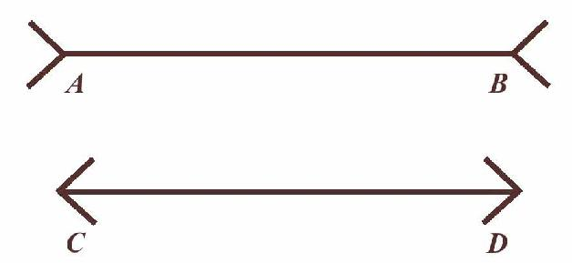
实际上它们是一样长。
再看下面两支铅笔，哪支长？你会不会觉得看上去左边的铅笔比右边的长？
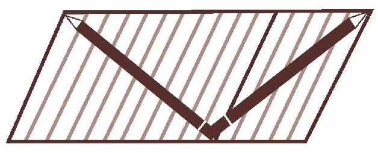
其实这两支铅笔也是一样长。在实际比较长短之前，你是靠直觉来判断的，对吗？现在，你是不是发现，直觉有时候不靠谱啊。
有时候直觉不仅仅是不靠谱，还是迷信的根源。
欧几里得在他所撰写的那本非凡的《几何原本》中说：总体总是比部分大。
我们的直觉会说：这是当然。比如，小文你原来所在的高三（14）班总共有53人，其中男生29人，女生24人，显然男生人数多，但男生人数再多，也多不过总人数。
男生人数再多，也多不过总人数
以上的例子是针对有穷集合，对于无穷集合呢？这里有两个无穷集合：
自然数集合={0，1，2，3，4，5，6，7…}；
自然数的平方数集合={0，1，4，9，16，25…}。
想想，自然数和自然数的平方数哪个多？
自然数多？还是自然数的平方数多？
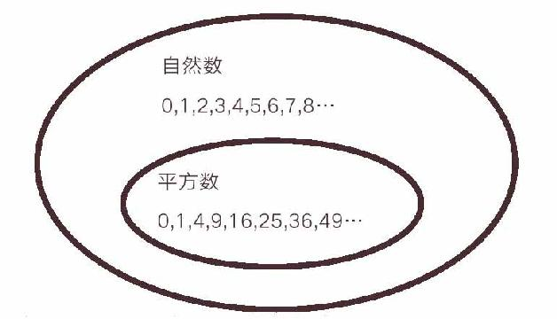
看起来，自然数集合包含了自身平方数集合，直觉会说，这有什么问题吗？自然数的个数当然是要多于自己的平方数的个数的嘛。
慢点，在解决这个问题之前，让我们把目光转到中世纪。1629年，伽利略写了一本名为《关于两大世界体系的对话》的书来支持哥白尼的“日心说”，伽利略因为这事被教会判处终身监禁。在监禁期间，他又写了一本《两种新科学的对话》，这本书仍然采用错综复杂的对话形式讨论了各种不同的哲学和数学观点。在对话中发出智慧声音的是萨维亚蒂（Salviati），他的反对者叫辛普利舍（Simplicius）。
在书中，萨维亚蒂向辛普利舍解释了无穷的各种形式，他从最好理解的那类无穷开始，经由萨维亚蒂，伽利略解释了一个圆可以被细分为“无穷多个”无限小的小三角形。
然后，萨维亚蒂在所有自然数和所有自然数的平方之间建立了一种一对一的对应关系，在书中，他说道：“我们必然得出结论，平方数与自然数一样多。”
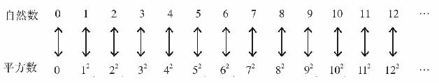
其实，伽利略在这本书中说明了无穷集合的一个重要性质：一个无穷集合的元素个数可以“等于”它的子集合元素个数——总体和部分的个数竟是一样的！——我们的直觉会觉得很怪异吧？
伽利略本想再写一本关于无穷的书，但不知何故，他止步于此，也许无穷的威力之大让他离开了这个课题。他只是轻描淡写地写道：“这有点奇妙，我们的想象力不能领会……无穷集合与有穷集合的性质，没有共同点。”
两百多年之后，康托尔对这个问题没有点到为止，他进行了系统的研究。
康托尔首先建立了集合的一些基本概念，他把集合元素的个数称为“基数”（Cardinality），集合A里有5支笔，称该集合的基数为5，也可表示为Card（A）=5或｜A｜=5。
一个集合里有5支笔，称该集合的基数是5
康托尔认为，要判断两个集合的元素是不是个数相同，只需要看这两个集合之间能不能建立起元素间的一一对应关系，如果可以，就可以说这两个集合“基数相同”。
假设有一个对数数一窍不通的农夫，他只想知道自己有多少头羊，你跟他讲“集合”“基数”之类的概念太复杂了，他也没时间细听。
他是不是可以这样做？他可以用一块石头代表一头羊，早晨，当他将羊放出去的时候，出去一头羊他就在羊圈边放一块石头。这样，羊圈旁边的石头个数就代表了他拥有的羊的数目。假如有一天农夫的羊被狼叼走了两只，羊圈边则会多出两块石头。这样，即使没有使用数字，农夫也可以对他的羊做到心中有数。
这时，农夫使用的是羊和石头的一一对应关系。
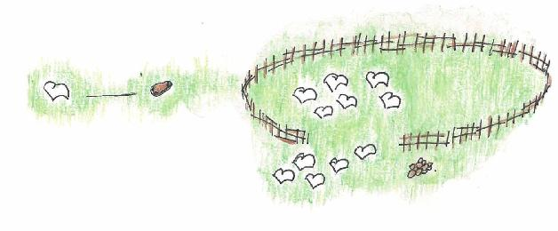
羊和石头的一一对应
就像两个人出牌，如果他们手中的牌张数相同，当一个人出一张牌，另一个人总能打出对应的牌一样。
康托尔正是采用了这种一一对应的方法证明了自然数、自然数的平方数、整数，在个数上是一样多的，即“基数相同”。
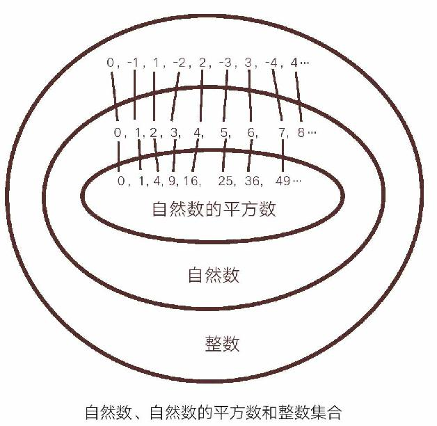
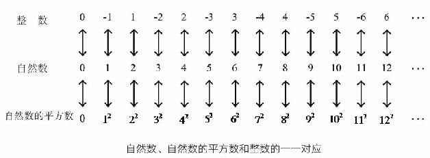
接下来，康托尔将证明的是自然数和有理数也是一一对应的。
什么是有理数？有理数是整数和分数的统称。乍一看，有理数比自然数多得多，0和1之间的分数就有
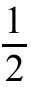
，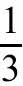
，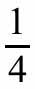
，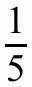
…无穷多个啊！康托尔是用一种很巧妙的方法来证明的。首先，他在第一行以正负交错的形式写下所有整数：0，1，-1，2，-2，3，-3，4，-4，5，-5…
然后，在第二行写下所有分母为2的分数，这时，他省去了那些在第一行2中已经出现过的有理数（如
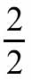
，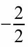
，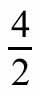
，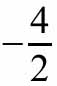
，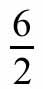
，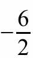
…因为它们分别等于1，-1，2，-2，3，-3…，前面已经出现过了）。在接下来的第三行里，他写下所有以3为分母的分数。同样地，也省去那些在前面已经出现过的有理数，比如
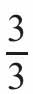
，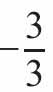
，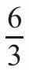
，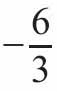
，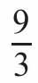
，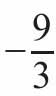
，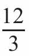
，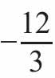
…你想想，如果康托尔以这种方式一直写下去，永远也不会有尽头。
但是，康托尔说，他可以知道每个有理数必然会出现在这个排列的某个固定的地方。例如：
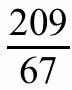
会出现在第67行，411列的位置上。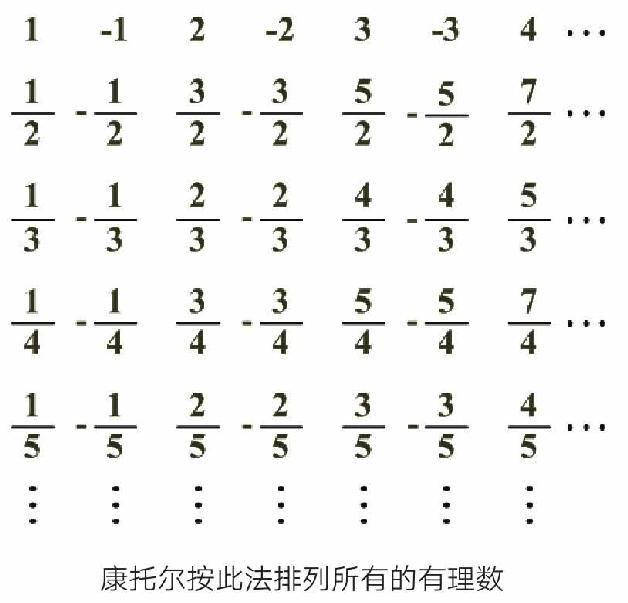
虽然有点繁琐，但从理论上而言确实可以用这种方式陈列出所有的有理数。接下来，为了将有理数和整数、自然数一一对应起来，康托尔得想办法将这张看起来是二维的无穷排列图，构造成一个一维的无穷排列。
康托尔是这样考虑的，如果从第一行开始往右数，他将永远到达不了第二行，因为第一行是无穷的（当然，每一行都是无穷的），于是，康托尔选择了一个曲折的锯齿形的前进路线。
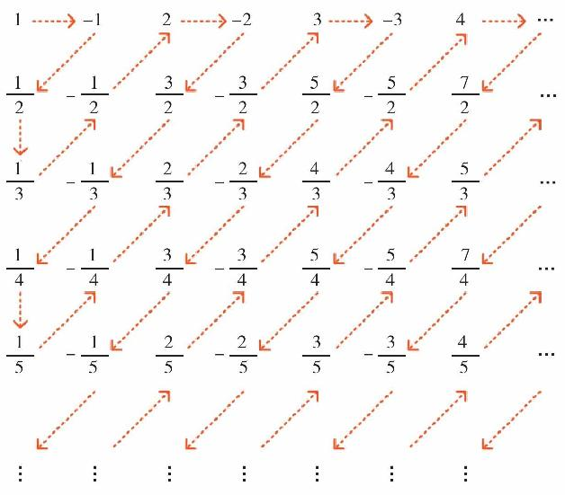
康托尔的锯齿形前进路线
小文，你想象一下，如果把这条迂回曲折的线路拉成直线，这时实际上就形成了这样一个从1开始的一维线性序列：
暂停一下，小文你是否注意到康托尔的这个列表没有包含有理数0，现在我们把它添加到1的前面。这样，每个有理数，不管是分数还是整数，总会在这个线性列表中出现。
如此这般，康托尔将有理数原来的二维列表变成了一个一维的列表。这样，康托尔实际上用这种方法证明了有理数的个数与自然数、整数、自然数的平方数的个数是一一对应的，即它们全都“基数相同”，康托尔将这类集合称为可数无穷集。
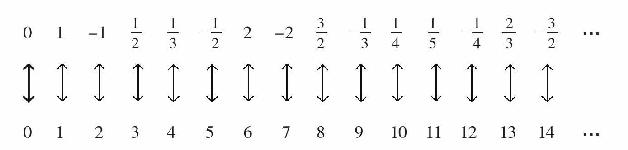
有理数与自然数的一一对应
最初，康托尔在考虑这些无穷的时候采用的是无穷大符号∞，但是他很快想到需要一个新的符号，考虑一番之后，他决定使用希伯来字母的第一个字母：阿列夫——ℵ，来命名他的无穷大基数。
康托尔把跟自然数集合基数相同的这类无穷大称为阿列夫零——ℵ0。
现在，康托尔实际上证明了：
Card（N）=Card（Z）=Card（2Z）=Card（Q）=ℵ0
呵呵，小文，现在你感觉如何？如果你没有看得打瞌睡的话，我们就再深入一点点哟。
康托尔继续想，有没有比ℵ0更大的无穷大呢？
在有理数之外，还有一些数不能表示成分数的形式，如
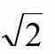
，自然常数e以及π这些，当然还有很多很多，我们现在知道它们是无理数。在数轴上，这些无理数“填充”了整数和分数之间的“空隙”，从而为我们呈现出完整的实数集合。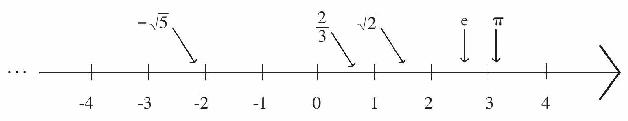
实数集合是否也可以排列成一个一维列表呢？如果可以，那就可以说，实数集也属于ℵ0一类的无穷。
通过一个独特的方法，康托尔证明了连试图将0到1之间的实数排列成一维列表都不可行。康托尔在证明的过程中利用了对角线上的数字，所以他的证明方法也叫“对角线证明”法，下面我来解释下这个方法：
假如有一个人叫托尼，托尼了解了康托尔将有理数一维排列的方法后，深感佩服。于是托尼效仿，打算将实数也用一维排列起来，他知道，每个实数都可以表示成小数形式，例如：
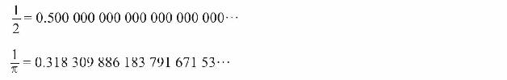
托尼费了很大的劲，按十进制无限小数的形式写出了0到1之间所有实数的排列：
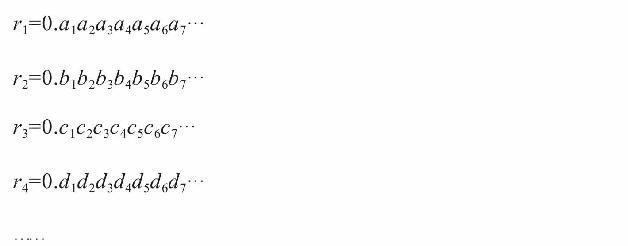
然后，托尼把这张表递到康托尔面前，对康托尔说：“康托尔先生，您看，我把实数一一排列出来了。”
康托尔看了一眼这张列表，他从托尼的这张列表中挑出一个对角线数，即：
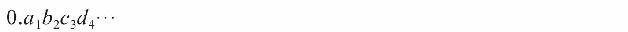
这个对角线数是从托尼那张列表的每一排取一个数字构成的，就像这样，在第一排小数点后取第一个数字a1，在第二排取小数点后第二个数字b2，在第三排取小数点后第三个数字c3，以此类推，直至无穷。
然后，康托尔将这个对角线数字的每一位加上1，这时原来的对角线数就变成：
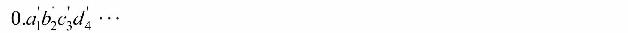
然后，康托尔问托尼：“请问这个数字
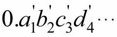
在您的排列中吗？”然后，康托尔问托尼愣在那里，有点不明白，康托尔继续说：“您看，其中
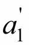
不等于a1，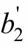
不等于b2，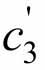
不等于c3，……沿着对角线方向以此类推，您会发现这个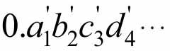
实际上与您的列表中列出的所有数字都至少有一位不同，所以这个数字必然不在您的这个列表中。”托尼想：“……那把这个数字加进去如何？”
但托尼随即发现，即使把这个数字加进去，用康托尔的方法还是可以构造出另一个新的对角线数！
这实际上说明了，0到1之间的实数无法跟整数那类可数无穷形成一一对应的关系，推广到整个实数集更是如此。
康托尔的“对角线证明法”举个例子是这样的，假设从0到1之间的全部实数可如下表（这里并不要求按特定的次序显示）列出：
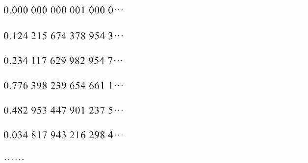
然后，他构造了一个上述排列的对角线数，正如前面介绍的，它是从上述无穷多个实数中的每一个中取一位数字构成的，方法是从第一个实数取小数点后的第一个数字，从第二个实数取小数点后第二个数字……对上面的例子来说，这个对角线数是：0.024 357…
然后，康托尔把上述对角线数的每一个数字都加以改变，例如，每一个数字都加上1，这样他就得到一个“新数”：0.135 468…
因为这个新数与之前那个排列的每一个实数至少在特别取定的那个位数上是不同的（因为这个位数加了1）。因此，构造的这个“新数”实际上不同于上面枚举的0到1之间的一切实数。
康托尔采用了这种反证法证明了假设的不成立，即0到1之间的实数不能构造成任何形式的一维列表，同时也证明了实数集合的基数实际上要大于整数集合的基数，是一个“更大”的无穷大。
也就是说，在康托尔眼里，漫无边际的无穷其实是有等级的，其中基数最小的是阿列夫零ℵ0。
按无穷集合的基数大小，康托尔试图构造一个等级越来越高的无穷大的阿列夫序列：ℵ0，ℵ1，ℵ2，ℵ3…
小文，你不是在看但丁的《神曲》吗，但丁凭着他的想象构造了九层同心圆结构的天堂体系，读者跟着但丁，可以从最里层的地狱中心，飞升到深邃无边的九重天。
现在，你也可以把康托尔的无穷大世界中的阿列夫家族想象为一个圆圈嵌套一个圆圈的神秘世界，每一个圆圈象征一定高位的级别（按基数大小划分的）——其中ℵ0就是里面那个最小的圆圈！
《神曲》的天堂共有九重天，而康托尔的这个同心圆无穷大世界却是无边无际的，没有尽头、没有彼岸……
小文，你如果觉得难以理解，你一点也不用觉得不好意思哦。对于无穷大的一些性质，连康托尔自己都觉得很吃惊，他曾经在给朋友戴德金（也是一位数学家，康托尔少有的支持者之一）的信中，这样表示他对刚刚发现的一个无穷大性质的心情：“我看着它，但我却不相信它。”
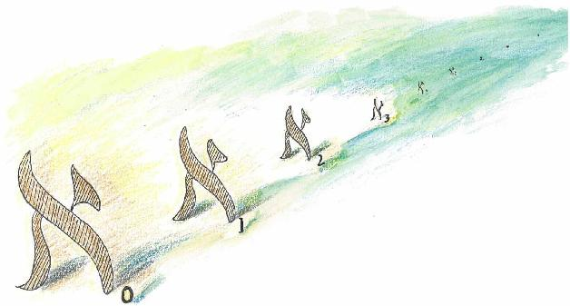
阿列夫家族
接着，康托尔开始考虑ℵ0和ℵ1之间的关系。康托尔想，那么，实数集合是否是这个序列中的第二个阿列夫，即ℵ1呢？
对康托尔自己来说，他相信实数集合是紧接着ℵ0的那个ℵ1，并一直希望证明：2ℵ0=ℵ1，可惜，这个假想的公式一直到他死都没有证明出来。
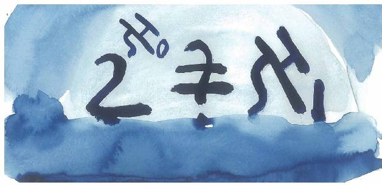
当康托尔沉醉于构造他的阿列夫序列的时候，当时的人们是怎么看他的呢？
平心而论，在当时，康托尔所提出的“无穷”，是一个超乎常人能力所能认识的世界，很多数学家认为“无穷”这东西是否存在都难以肯定，而康托尔竟然还“漫无边际”地去数它们，还去比较它们的大小！——所以，也就不难理解当时的人们对康托尔提出的这套理论的感觉了。
其中的一个说法是——这套理论是“雾上之雾”，法国数学界权威庞加莱（J.H.Poincaré）则认为康托尔的无穷理论是一种病态的东西，他说：“我们的下一代将把康托尔的集合论当作一种疾病。”